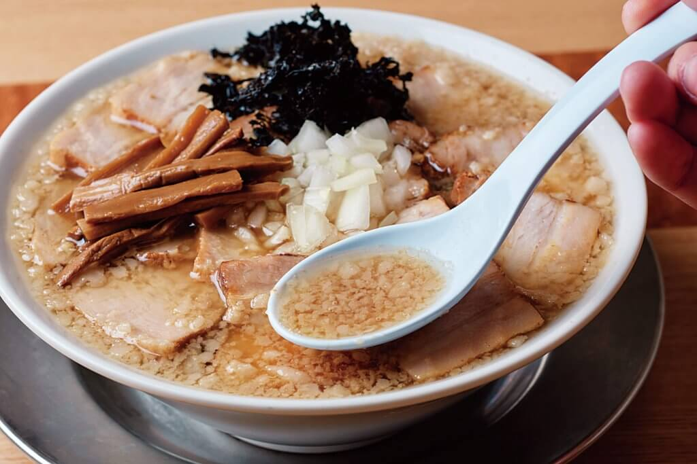
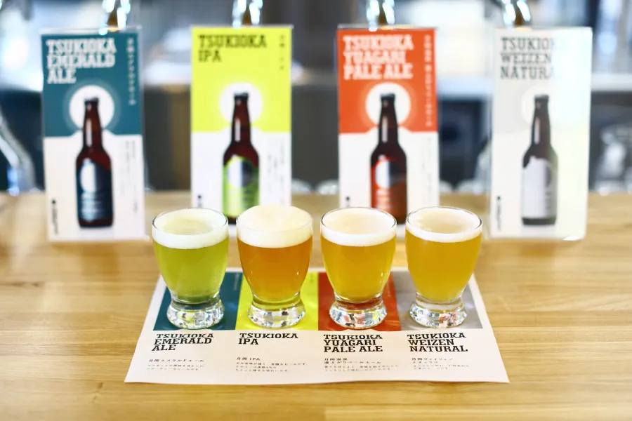
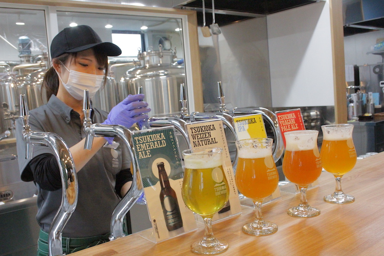
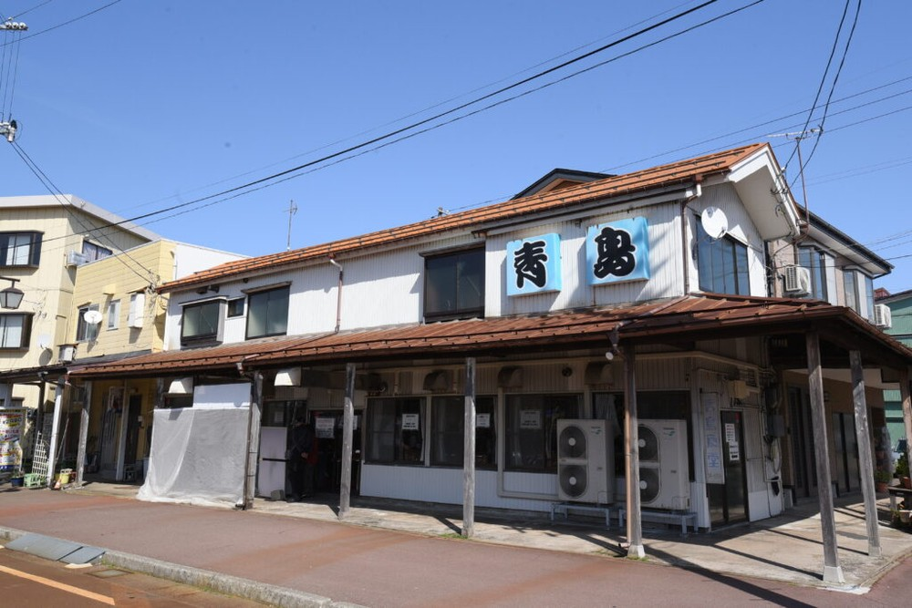
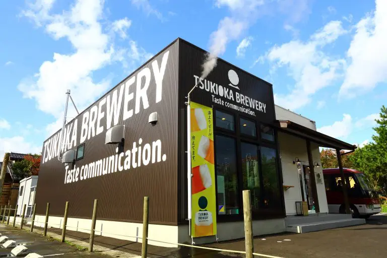

ニイガタのラーメンはレベルが高い
人口に対するラーメン店数で全国トップクラスを誇る新潟県。気候や風土、産業に合わせた特徴ある5種類のラーメンが生まれ、それぞれの地域で愛されてきました。今では全国ネットのテレビ番組にも取り上げられ、評論家から高い評価を得るなど、県外での認知度も上がっています。なぜ５大ラーメンが生まれたのか、愛され続ける理由はどこにあるのか。ここでは、歴史を縦軸に、地域性を横軸にして、新潟の５大ラーメンの魅力をひもときます。

月岡ブルワリー【イチオシのビール】
TSUKIOKA EMERALD ALE (月岡エメラルドエール)

1本/660円から
月岡ブルワリー(Tsukioka Brewery)のモットーは“飲む人と人が「つながる」ビールをつくること”
新潟県「月岡温泉」という温泉地で、地域のいろんなものにスポットを当てたビール造りを行っています。
TSUKIOKA BREWERYでは、日本酒ソムリエを持った醸造責任者をはじめ、飲食経験の豊富なスタッフやSNS担当、接客のスペシャリストなど、それぞれ独自の強みをもったスタッフが運営を行っています。
「うちの町のビール」と思ってもらえるようなブランド作りを大切に、新潟で一番地域にコミットするブルワリーを目指しています。
直営のKITCHEN GEPPOでは、ソーセージや月岡バーガーなど自家製ビールにぴったりの料理が用意され、地域の魅力を発信中です。

月岡温泉の湯の色に因んだエメラルドグリーンとマスカットの香りが特徴のフルーツエール。2020.11月にリリースされた月岡エメラルドエールはビール感のあるスッキリと爽やかな味わいで、アルコール度数も低いので、ビール初心者や女性にもお勧め。
スタイル：フルーツエール、アルコール度数：4.0%
”マニアさんのコメント”
- 住所
- 営業時間
- 定休日
- 電話番号
- アクセス
- 駐車場
日本で最初のクラフトビール〈エチゴビール〉
全国第一号クラフトビール（地ビール）

日本においてクラフトビール（当時の呼び方は「地ビール」）が誕生したのは、1994年の酒税法の改正でビール製造免許を取るのに必要な最低製造量が大きく引き下げられたことで、中小の造り手によるビール製造が可能になったことがきっかけです。このとき全国で一歩先んじてブルーパブを開き、日本で初めての国内製造クラフトビールとなったのがエチゴビールです。つまりエチゴビールの創業は、日本のクラフトビールの誕生でもあります。

日本においてクラフトビールが誕生したのは、1994年。ビール製造免許を取るのに必要な最低製造量が大きく引き下げられたことで、中小の造り手によるビール製造が可能になったことがきっかけです。

全国で一歩先んじてブルーパブを開き、1995年2月に日本で初めての国内製造クラフトビールとなったのがエチゴビールです。
均質的な味を追うことなく、姿形のわかる個性的なビールを造りたい、そんな想いが込められたビールです。

”マニアさんのコメント”
- 住所
- 営業時間
- 定休日
- 電話番号
- アクセス
- 駐車場
”マニアさんのコメント”
- 住所
- 営業時間
- 定休日
- 電話番号
- アクセス
- 駐車場
世界から認められた味！〈スワンレイクビール〉
/h3>

”マニアさんのコメント”
- 住所
- 営業時間
- 定休日
- 電話番号
- アクセス
- 駐車場
あなたの知らないニイガタ